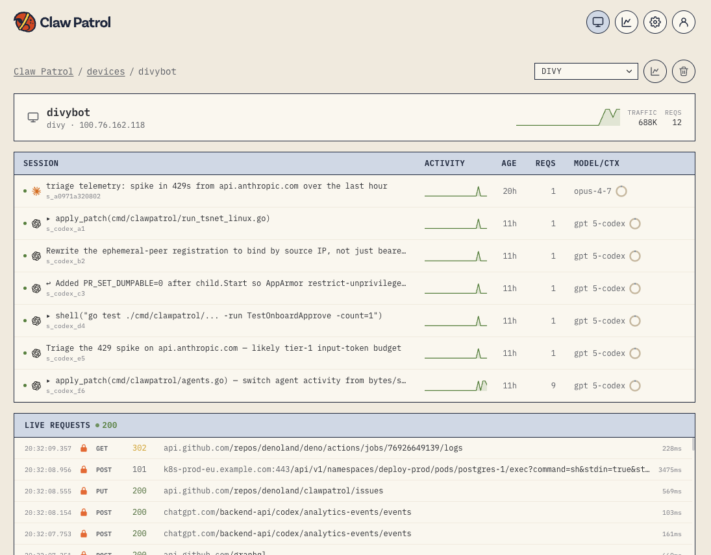
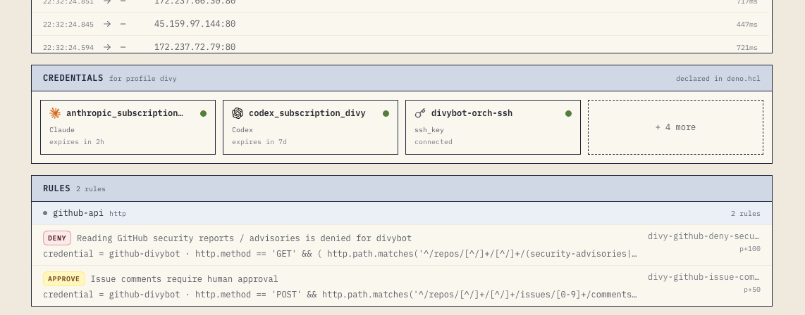

![]()
The first time you try a coding agent on a real project, the boundary shows up fast. It can edit files and run tests, but the useful work is usually somewhere past localhost: checking GitHub, posting status, reading app state, or calling a model API.
The obvious answer is to give the agent network access. The obvious problem is that you do not want long-lived tokens sitting on every VM. Moving those tokens to a gateway helps, but it is not enough. Even if the Postgres password lives there, the gateway still needs to know that DROP TABLE users is not a request it should forward.
That is the part Clawpatrol is meant to cover. It’s a VPN proxy that sits between an agent process and the network, decodes protocol traffic, and evaluates rules before the request reaches the upstream service.
The gateway config usually lives in a file like gw.hcl, and the gateway starts from that file:
clawpatrol gateway gw.hclIn Tailscale mode, the gateway embeds a tsnet node and publishes its join page at a *.ts.net URL.
auth_keys scope and the tag the gateway node should use.export TS_OAUTH_CLIENT_ID=...
export TS_OAUTH_CLIENT_SECRET=...The tailnet policy also has to allow that tag:
tagOwners. See Tailscale tags.nodeAttrs. See Funnel.autogroup:internet. See exit-node grants.{
"tagOwners": {
"tag:bot": ["autogroup:admin"]
},
"nodeAttrs": [
{
"target": ["tag:bot"],
"attr": ["funnel"]
}
],
"grants": [
{
"src": ["tag:bot"],
"dst": ["autogroup:internet"],
"ip": ["*"]
}
]
}WireGuard mode is the other option, but the rules work the same way once traffic reaches the gateway.
gateway {
dashboard_listen = "127.0.0.1:8080"
public_url = "https://clawpatrol.example.ts.net"
state_dir = "/var/lib/clawpatrol"
tailscale {
funnel = true
oauth_client_id = "{{secret:TS_OAUTH_CLIENT_ID}}"
oauth_client_secret = "{{secret:TS_OAUTH_CLIENT_SECRET}}"
tags = ["tag:bot"]
operators = ["you@example.com"]
}
}funnel = true exposes the public onboarding and OAuth callback routes. The dashboard can still live on the tailnet. The OAuth values above are loaded from the process environment through {{secret:...}}; they are not stored in the HCL file.
On the agent VM, install the CLI and join the gateway URL from gw.hcl:
curl -fsSL https://clawpatrol.dev/install.sh | sh
clawpatrol join https://clawpatrol.example.ts.net \
--hostname divybot \
--profile divyApprove the join in the browser:

Then run the agent under Clawpatrol:
clawpatrol run claudeclawpatrol run wraps one process tree. On Linux it starts the command in a new network namespace and hands a TUN fd to a per-host daemon. The daemon sends that traffic to the gateway over the transport chosen at join time. Other processes on the host keep their normal network path.
Endpoints describe the services the agent may talk to. Keep them small and name them by intent.
endpoint "https" "anthropic" {
hosts = ["api.anthropic.com"]
}
endpoint "https" "github-api" {
hosts = ["api.github.com", "raw.githubusercontent.com", "github.com"]
}
endpoint "https" "slack-api" {
hosts = ["slack.com", "api.slack.com", "wss-primary.slack.com"]
}
endpoint "postgres" "pg-dev" {
host = "pg-dev.internal:5432"
}Credentials are gateway-side slots. The real token or password stays off the agent machine. Once the device has joined, connect each credential from the dashboard. OAuth-backed services redirect through the gateway’s public URL, while SSH keys, database passwords, and API tokens are stored against the gateway profile instead of copied onto the VM.
credential "anthropic_oauth_subscription" "claude" {
endpoint = https.anthropic
}
credential "github_oauth" "github" {
endpoint = https.github-api
}
credential "slack_tokens" "slack" {
endpoint = https.slack-api
}
credential "postgres_credential" "pg-dev" {
endpoint = postgres.pg-dev
user = "agent"
}A profile binds an agent to a credential set:
profile "divy" {
credentials = [
anthropic_oauth_subscription.claude,
github_oauth.github,
slack_tokens.slack,
postgres_credential.pg-dev,
]
}A readonly profile can omit the Postgres writer or Slack credential without changing the agent VM:
profile "readonly" {
credentials = [
anthropic_oauth_subscription.claude,
github_oauth.github,
]
}The dashboard shows the connected credential cards next to the rules that can use them:

Rules target an endpoint, optionally narrow by credential, evaluate a CEL condition over decoded request facets, and return allow, deny, or an approval flow.
For Postgres, the gateway reads the wire protocol and exposes sql.verb, sql.tables, sql.functions, sql.statement, and sql.database to rules. This is the rule that matches the screenshot:
rule "pg-no-destructive-ddl" {
endpoint = postgres.pg-dev
priority = 100
condition = <<-CEL
sql.verb in ['drop', 'truncate', 'alter']
CEL
verdict = "deny"
reason = "destructive sql; drop users table not allowed"
}Add a second deny for database-side filesystem/network escape hatches:
rule "pg-banned-functions" {
endpoint = postgres.pg-dev
priority = 100
condition = <<-CEL
sets.intersects(sql.functions, [
'pg_read_file', 'pg_read_binary_file', 'lo_get',
])
|| sql.functions.exists(f, f.startsWith('dblink_'))
CEL
verdict = "deny"
reason = "filesystem-reaching function"
}Reads can be allowed explicitly:
rule "pg-reads" {
endpoint = postgres.pg-dev
condition = "sql.verb in ['select', 'show', 'explain', 'describe']"
verdict = "allow"
}Mutations can go through a human:
approver "human_approver" "me" {
channel = "#agent-approvals"
credential = slack_tokens.slack
interactive = true
}
rule "pg-mutations" {
endpoint = postgres.pg-dev
condition = "sql.verb in ['insert', 'update', 'delete', 'merge', 'notify']"
approve = [human_approver.me]
reason = "Postgres mutations require review"
}Then make unknown SQL fail closed:
rule "pg-default" {
endpoint = postgres.pg-dev
priority = -100
verdict = "deny"
reason = "unknown SQL verb"
}That gives you a simple posture:
SELECT -> allow
INSERT -> ask
DROP -> deny
unknown verb -> denyThe same rule shape works for HTTP. For GitHub, reads can pass and writes can go through review:
rule "github-read" {
endpoint = https.github-api
condition = "http.method in ['GET', 'HEAD', 'OPTIONS']"
verdict = "allow"
}
rule "github-write" {
endpoint = https.github-api
condition = "http.method in ['POST', 'PUT', 'PATCH', 'DELETE']"
approve = [human_approver.me]
reason = "GitHub writes need human approval"
}The Slack rule is slightly narrower. Reads and websocket traffic can pass, but posting messages should be reviewed:
rule "slack-read" {
endpoint = https.slack-api
condition = <<-CEL
http.method in ['GET', 'HEAD', 'OPTIONS']
|| http.host == 'wss-primary.slack.com'
CEL
verdict = "allow"
}
rule "slack-chat-write" {
endpoint = https.slack-api
condition = <<-CEL
http.method == 'POST'
&& http.path.startsWith('/api/chat.')
CEL
approve = [human_approver.me]
reason = "Slack messages should be reviewed before sending"
}With the config above, this is what changes at runtime:
~/.claude on the agent VM.drop, truncate, and alter statements are denied before they reach the database.Clawpatrol configs are just files, so put them in git and test them.
clawpatrol validate ./gw.hclRule fixtures can live next to the config. You can download actions from a live gateway and add them as fixtures, so the policy tests use traffic the agent actually produced:
tests/
pg_drop_users.json
pg_select_users.json
github_post_issue.jsonThen run:
clawpatrol test ./gw.hcl ./testsThis matters because the config is code in the path of every agent request. A bad rule can block the agent at runtime or allow a write that was supposed to be gated.